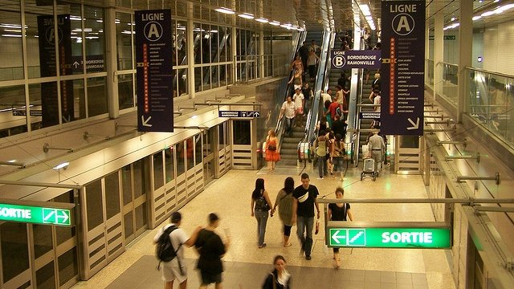
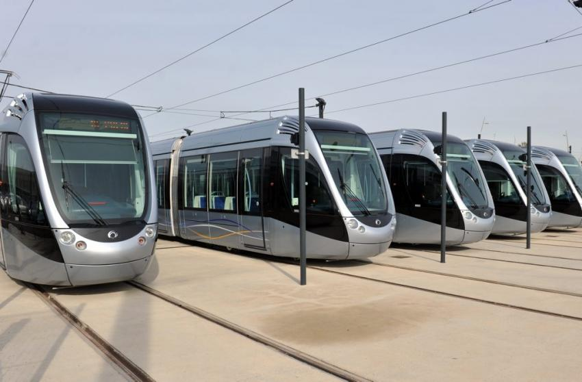
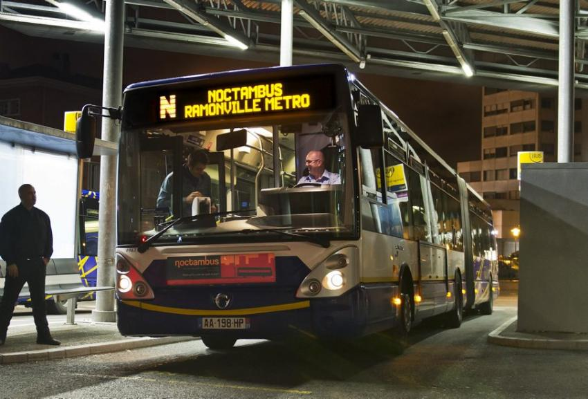

-

EN METRO
Ligne A : Balma-Gramont › Basso-Cambo. Ligne B : Borderouge › Ramonville. Le métro fonctionne tous les jours de 5h15 à minuit, et jusqu’à 3h les vendredis et samedis. Des nombreuses stations de métro offrent aux usagers de grands parkings. Le stationnement est gratuit avec le titre de transport validé : Les parcs relais de la ligne A - Balma-Gramont : 1360 places - Argoulets : 900 places - Jolimont : 350 places - Arènes : 600 places - Basso-Cambo : 540 places Les parcs relais de la ligne B - Borderouge : 1130 places - La Vache : 440 places - Ramonville : 1110 places
Info metro -

EN TRAM
Ligne T1 : Palais de Justice › Aérosconstellation Tous les jours de 4h50 à 23h20 et jusqu’à 0h20 les vendredis et samedis (depuis Aérosconstellation). De 5h45 à 0h20 et jusqu’à 1h20 les vendredis et samedis (depuis Palais de Justice). À partir d’avril 2015 : ligne T2 (Palais de Justice › aéroport). Vente de tickets dans chaque station sur des machines. Pas de vente de billet à bord du Tram.
Info tram -

EN BUS
Plus de 80 lignes de bus sont à votre disposition.
infos bus Navette du centre-ville Minibus électrique gratuit, avec des arrêts à la demande. La navette fonctionne de 9h à 19h du lundi au samedi. Passage toutes les 10 minutes.
infos navette centre-ville -

EN SOIREE
Le réseau bus - métro et Tram fonctionne : - de 21h30 à 1h00 les vendredis et samedis pour les bus et le tram, et jusqu'à 3h pour le métro - de 21h30 à minuit du dimanche au jeudi La nuit le service Noctambus prend le relais du jeudi au vendredi de 1h00 à 4h00 du matin avec un départ toutes les heures de Marengo-SNCF (dernier départ 4h) en direction des campus universitaires. Noctambus fonctionne jusqu'au 30 juin et reprend son service à la rentrée universitaire, au mois de septembre.positions de peintures temporaires et la diversité de ses ambiances musicales.
- © Untitled. All rights reserved.
- Design: HTML5 UP